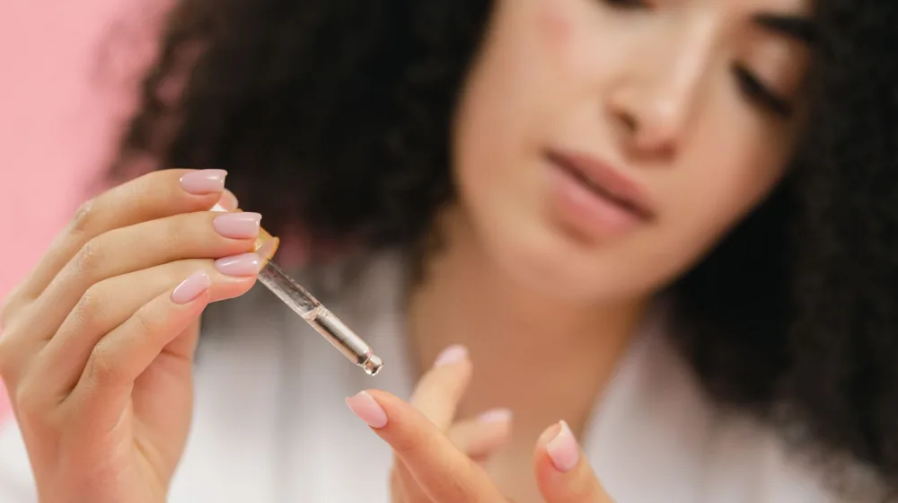

초보자도 실패 없이! 건강한 손톱 만드는 셀프 네일케어 루틴 가이드
사진: Sergey Meshkov / Pexels (무료 이미지, 출처 표기)
깔끔하고 건강한 손톱, 집에서 전문가처럼 관리하는 비법

깔끔하고 건강한 손톱을 원하지만, 어떻게 시작해야 할지 막막하셨나요? 비싼 네일숍 대신 집에서 손쉽게 할 수 있는 셀프 네일케어 루틴을 찾고 계신다면 이 글이 정답입니다. 오늘은 초보자도 어렵지 않게 따라 할 수 있는 기본적인 네일케어 방법과 건강한 손톱을 유지하는 팁을 자세히 알려드립니다.
왜 꾸준한 네일케어가 중요할까요?
손톱은 단순히 미용적인 역할만 하는 것이 아닙니다. 손가락 끝을 보호하고, 물건을 집는 등 일상생활에 중요한 기능을 담당하죠. 또한, 손톱의 상태는 우리 몸의 건강을 반영하기도 합니다. 건조하고 쉽게 부러지거나 색깔이 변하는 손톱은 영양 부족이나 특정 질환의 신호일 수 있습니다.
정기적인 네일케어는 손톱 주변의 큐티클을 정돈하여 거스러미가 생기는 것을 막고, 감염 위험을 줄여줍니다. 또한, 손톱에 적절한 영양과 보습을 공급하여 건강하고 단단하게 유지하며, 보기에도 깔끔하고 자신감 있는 이미지를 만들어줍니다.
셀프 네일케어, 이것만 준비하세요! (필수 준비물)
집에서 네일케어를 시작할 때, 모든 도구를 갖출 필요는 없습니다. 아래 나열된 기본적인 준비물만으로도 충분히 전문적인 관리가 가능합니다. 2026년 11월 기준으로 시중에서 쉽게 구할 수 있는 제품들입니다.
만약 네일 폴리시를 바를 계획이 없다면 베이스코트와 탑코트는 생략해도 좋습니다. 하지만 건강한 손톱을 위해서는 큐티클 오일과 핸드크림은 필수적으로 준비하는 것이 좋습니다.
전문가처럼 따라하는 건강한 손톱 관리 5단계
이제 본격적으로 셀프 네일케어 루틴을 시작해 볼까요? 다음 5단계만 따라 하면 집에서도 손쉽게 깔끔한 손톱을 만들 수 있습니다.
건강한 손톱을 위한 추가 관리 팁
기본적인 루틴 외에도 건강한 손톱을 위해 몇 가지 습관을 들이는 것이 좋습니다.
- 충분한 보습 유지: 큐티클 오일과 핸드크림을 수시로 발라 손톱과 주변 피부가 건조해지지 않도록 합니다. 특히 손을 씻은 후에는 반드시 보습제를 발라주는 것이 중요합니다.
- 손톱 물어뜯지 않기: 손톱을 물어뜯는 습관은 손톱 변형과 세균 감염의 원인이 될 수 있으므로 반드시 고쳐야 합니다.
- 강화제 및 영양제 사용: 손톱이 약하고 잘 부러진다면 손톱 강화제나 영양제를 꾸준히 발라주는 것도 도움이 됩니다. 비오틴이 함유된 영양제를 섭취하는 것도 좋은 방법입니다.
- 물과 세제로부터 보호: 설거지나 청소 등 물을 많이 사용하는 작업을 할 때는 고무장갑을 착용하여 손톱이 물에 불고 세제에 노출되는 것을 막아줍니다.
- 무리한 손톱 사용 자제: 손톱으로 스티커를 떼거나 병뚜껑을 따는 등의 행동은 손톱 손상을 유발하므로 피해야 합니다.
네일케어 주기 및 주의사항
네일케어 주기는 개인의 손톱 성장 속도나 상태에 따라 다르지만, 일반적으로 1~2주에 한 번 정도가 적당합니다. 너무 자주 하거나 과도하게 관리하는 것은 오히려 손톱 건강에 좋지 않을 수 있습니다.
- 과도한 큐티클 제거 금지: 큐티클은 손톱을 보호하는 역할을 합니다. 너무 깊게 제거하면 세균 감염의 위험이 있으므로, 가볍게 밀어 올리고 들뜬 부분만 정리하는 것이 좋습니다.
- 아세톤 사용 자제: 아세톤은 손톱을 건조하게 만들 수 있습니다. 가능하면 아세톤 프리 리무버를 사용하고, 사용 후에는 반드시 손톱에 보습제를 발라줍니다.
- 손톱 상태 확인: 네일케어 중 손톱에 통증이 있거나, 붉어짐, 부어오름 등의 증상이 나타나면 즉시 중단하고 전문가와 상담해야 합니다. 손톱 변형이나 색깔 변화가 지속된다면 피부과 전문의의 진료를 받아 정확한 원인을 파악하는 것이 중요합니다.
집에서 꾸준히 관리하면 누구나 건강하고 아름다운 손톱을 가질 수 있습니다. 오늘 알려드린 루틴과 팁들을 참고하여 자신만의 네일케어 습관을 만들어보세요!
🔗 이 글도 함께 보면 좋아요: 나에게 딱 맞는 스킨케어 루틴, 3가지 유형 완벽 비교
관련 추천 상품
이 포스팅은 쿠팡 파트너스 활동의 일환으로, 이에 따른 일정액의 수수료를 제공받습니다.